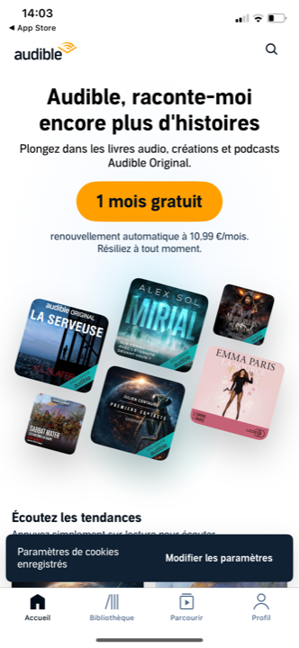
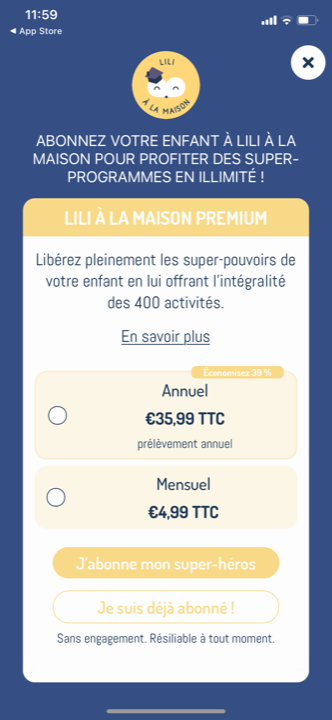
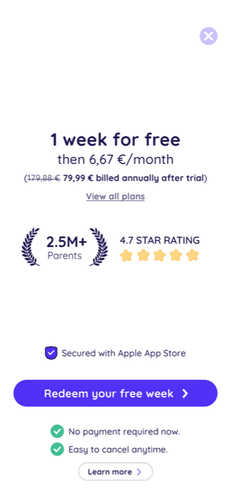
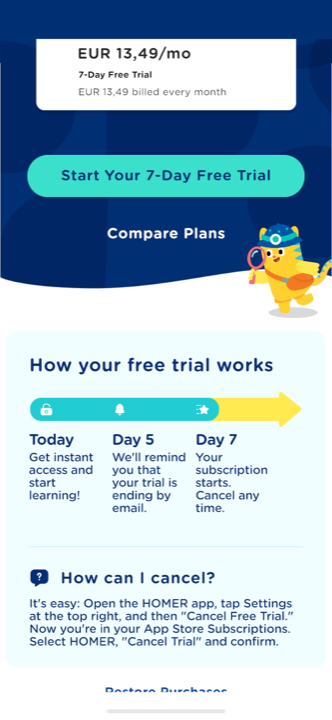
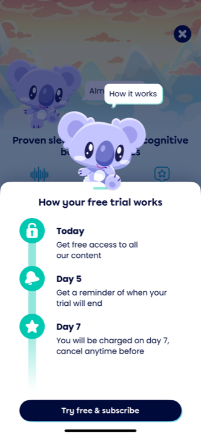
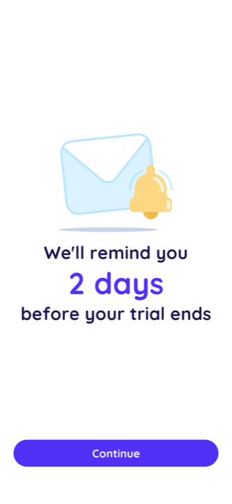
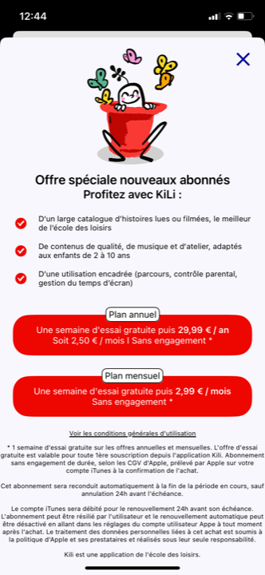

Réassurer au moment de payer, sans essai à désamorcer
La réponse aux questions de la passation
La synthèse d'abord ; les écrans qui la fondent suivent, groupés par approche. Honnêteté : je liste aussi ce que le benchmark fait et qu'on ne reprend pas.
1 · Combien d'écrans de réassurance ?
Solide Dans tout le corpus, la réassurance n'est presque jamais un écran à part. Quand elle l'est (Moshi, Homer, Reading.com, Epic, Readmio), c'est toujours une timeline d'essai qui sert à désamorcer le prélèvement à venir. Nous n'avons pas d'essai, donc cette raison d'être disparaît. Les apps à modèle « paiement direct / crédit » (Audible, Storytel, Bayam, LILI, KiLi) posent la réassurance directement sur l'écran de l'offre, sous le CTA ou en bloc compact.
Observé Conséquence pour le flow : les écrans 15 et 16 (« réassurance paiement 1 et 2 ») n'ont pas de justification benchmark. Je recommande de les supprimer et d'intégrer la réassurance à l'écran 14 (présentation de l'offre). Si Charles veut malgré tout un temps de respiration, l'unique option défendable est un écran de confirmation sobre façon Storytel placé après le choix de l'offre, mais il fait largement doublon avec la modale Apple native (écran 18) qui récapitule déjà prix et conditions.
2 · Qu'est-ce qu'on y met, et dans quel ordre de priorité ?
- 1. Sans engagement, résiliable à tout moment Solide Universel (Audible, Storytel, Bayam, LILI, KiLi). Le socle non négociable.
- 2. Transparence du renouvellement Solide « X €/mois, renouvelé chaque mois, jusqu'à ce que vous résiliez » (Audible, Storytel). On dit le prix, le rythme, la sortie.
- 3. Le quota d'heures = pas de prélèvement surprise Observé Notre angle différenciant (voir approche 4) : le quota dit ce que vous payez et ce que vous obtenez, point.
- 4. Paiement sécurisé Solide Badge « Paiement sécurisé via l'App Store » (Reading.com). Léger, vrai (achat in-app Apple/Google), efficace.
- 5. Sans publicité, espace sûr Observé La réponse au « pourquoi payer si c'est gratuit ailleurs ». Déjà dans la voix Kidsono (« 100% sécurisé. Sans publicité. »).
Observé Plus l'autorité au moment de décider : Storytel et Reading.com réaffichent leur caution au paywall. Pour nous, le tampon Éducation nationale + un écho condensé éditeurs (sceau le plus fort, gardé pour la décision). À articuler avec le passage autorité.
3 · Qu'est-ce qu'on évite ?
- La timeline d'essai (J0 / J5 / J7) : on n'a pas d'essai. La reprendre créerait une attente fausse.
- « 0 € aujourd'hui » / « 1 semaine gratuite » : on demande le paiement direct, le gratuit a déjà été donné en amont.
- Le témoignage et la preuve sociale de masse (« 2,5 M de parents », « 4,7 étoiles ») : notoriété zéro, on ne l'a pas.
- Le bloc de conditions légales lourd à la KiLi : un lien CGU sobre suffit (modèle Storytel).
- Fausse urgence, prix barré trompeur, dark pattern : interdits absolus sur public parental.
4 · Quel est notre angle différenciant ?
Observé Le marché rassure par la timeline d'essai (désamorcer le prélèvement futur) ou par la preuve de masse (les autres y vont). Nous n'avons ni l'un ni l'autre. Mais notre modèle quota (à la Storytel : un nombre d'heures par mois) dispense d'anxiété par construction : vous savez exactement ce que vous payez et ce que vous obtenez, il n'y a pas de zone grise. Bien présenté (libellés d'usage à la Storytel : « pour tous les jours », « pour vos trajets », « pour vos loisirs »), le quota devient lui-même un argument de réassurance, pas seulement une grille tarifaire.
Les écrans, groupés par approche
Lecture pleine résolution, capture par capture. Chaque carte : ce que je repère, et l'intérêt pour Kidsono.
La mention résiliation sous le CTA
La forme la plus répandue et la plus légère : une ou deux lignes collées au bouton d'achat. Aucun écran dédié. C'est le minimum vital, présent partout, y compris sur les modèles à paiement direct comme le nôtre.



L'écran de confirmation transparente
Un écran sobre, beaucoup de vide, qui récapitule l'offre et les conditions avant de valider. Le plus premium du corpus. Conçu pour les modèles à essai (confirmer « gratuit puis renouvellement »), mais la mécanique de transparence est transposable.


Le bloc compact près du CTA : badges et coches
Regrouper tous les signaux de confiance autour du bouton : badge de sécurité, coches de réassurance, transparence du débit. Reading.com en est la synthèse la plus aboutie (mais sature de preuve de masse, qu'on retire).


Le quota d'heures, anti-anxiété par construction
Le modèle qui colle au nôtre. Le quota dit exactement ce qu'on paie et ce qu'on obtient : il n'y a pas de zone grise, donc pas d'anxiété de prélèvement. Bien présenté, il rassure autant qu'il vend.


Montrer COMMENT résilier
Au-delà de « résiliable », quelques apps montrent les étapes concrètes de résiliation. Plus fort que la promesse : ça prouve qu'on ne piège pas. À doser pour ne pas alourdir.

Les patterns du standard US (essai) et la transparence lourde
Le marché construit toute sa réassurance autour de l'essai gratuit. C'est massif et bien fait, mais sans objet pour nous. Montré ici pour cadrer ce qu'on écarte sciemment, et pourquoi.



Ce que ça donne pour Kidsono
La reco (à trancher avec Charles avant le brief Claude Design)
- Pas d'écran de réassurance dédié. Supprimer les écrans 15-16 du flow ; la réassurance devient une couche de l'écran 14 (présentation de l'offre). Le benchmark ne justifie un écran à part que pour un essai, qu'on n'a pas.
- Le contenu de la couche réassurance, par priorité : 1/ « Sans engagement, résiliable à tout moment » ; 2/ transparence du renouvellement (prix + rythme + sortie, sous le CTA) ; 3/ le quota d'heures lisible (notre anti-anxiété) ; 4/ badge « paiement sécurisé App Store » ; 5/ « sans publicité ».
- L'autorité au paywall : tampon Éducation nationale + écho éditeurs condensé, au moment de décider. À articuler avec le passage autorité (ne pas répéter le mur déjà vu plus tôt).
- Option à proposer : un lien « Comment résilier ? » discret (façon Homer), qui prouve qu'on ne piège pas.
- Ton : voix parent, premium restraint (Storytel). « Vous restez la patronne. Sans engagement, résiliable quand vous voulez. »
L'avis
Force : la reco s'appuie sur une régularité nette du corpus (la réassurance dédiée n'existe que pour désamorcer un essai) et sur deux refs au modèle quasi identique au nôtre (Audible et Storytel, modèles à crédit/quota). Le quota comme argument de réassurance, et pas seulement comme grille de prix, est un angle solide et peu exploité.
Risques : supprimer les écrans 15-16 contredit la décision de réunion (« deux écrans, confirmé »). À assumer explicitement avec le Président. Risque opposé : à trop condenser sur un seul écran, le paywall devient dense ; la discipline de composition (beaucoup de vide, un seul CTA) est la condition pour que « concret » reste « premium ». Le badge « sécurisé App Store » doit être vrai au regard de l'implémentation réelle du paiement (à valider avec Samuel).
Position vs standard : contrarian assumé sur la forme (le marché empile les écrans de réassurance d'essai, on n'en met aucun), au standard sur le fond (résiliation + transparence + sécurité sont universelles). L'angle quota anti-anxiété est en avance sur le marché FR, qui rassure mal au paiement.
Document de travail, mission conseil Kidsono. 14 captures lues en pleine résolution ; refs positives limitées aux gagnants du corpus (Audible, Storytel, Reading.com, Bayam, KiLi, LILI). Prochaine étape : trancher le nombre d'écrans et le contenu avec Charles, puis brief Claude Design (une seule proposition, sans illustration, mockup iPhone statique).